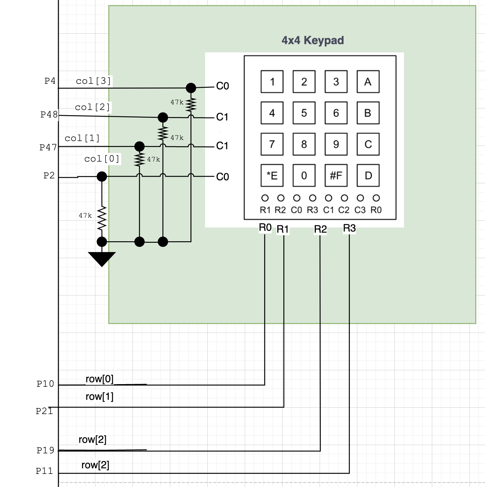

Lab 3 Writeup
Lab 3: Keypad Scanner
Hours Spent: 56 hours, Mapped with Toggl Track
Introduction
The main point of this laboratory was to use asynchronous components and a finite state machine to control a keypad connected to an FPGA. The Finite state machine would keep track of both the values of the states, as well as have a recorded memory of both the most recent and the last pin pressed. The difficulties of this lab lay within creating a way to handle metastability; in order to ensure that no random metastability occured within the system while it was running, you need to have a set of flip flops through which you run the column input.
General Approach
I first began by drawing a rudimentary FSM chart:

This is based on the fundamental logic that there should be four parts to this problem: 1. A section of the code/hardware that sends a voltage through each row as it goes, waiting to detect a signal. If it does detect something, it sends us to the next state.
A section of the code/hardware that logs the corresponding rows and columns so that we can compute what the letter we need to light up is
A section of the code/hardware that cycles for about 1ms to prevent bounceback caused by any of the keys
A section of the code/hardware that waits until the original button (or what I coined the RX Signal) that was pressed is no longer pressed down (i.e. can’t say “nothing is pressed”, but rather that the original button is no longer pressed); thus, you wait till the RX signal stops.
I additionally decided to define a row state machine, although this would reside within the actual program as combinational logic, not as a module.
Metastability
Some challenges with this lab are implementing a way to handle metastability; in this case, it was necessary to add a set of flip flops about the column input logic so that asyncronous signals could become synchronous; in my case, I chose to send the columns through two flipflops. I integrated this step within my FSM block, after I had initially made the logic for it, which resulted in the large amount of code that it contains; in the future, I’d like to trim this FSM block down so that it looks simpler and shows the outputs and inputs easier to the causal viewer. However, for now the flip flops have been implemented to run right after the waiting period, within the “LOG” state; the LOG state will wait for two cycles of flip flops, before taking the output of the flip flop (mat_stab), and using it as if it were the column. During this process, the intial row that the column was saved to has been stored, and I am powering it so that the upcoming TILL_RX_STOP step can run.
My debouncing approach is likely more rudimentary than it could be: I could additionally have added a way to track how many one’s in a row the machine had received, and use that to determine if the button was actually pushed. This would have required a longer loop, but would likely have been more accurate, as currently some a quick tap of the key makes it repeat (even though I’ve made the CYCLE stage extremely long relatively speaking). I think that the looking at the 1’s strategy would be very effective for eliminating debouncing. I think that in particular, I could have implemented more flip-flops to really make sure that the state was what the board originally thought it was.
Drawing Charts
Using my initial approach as well as some blocking of the modules that I would need for this program, I was then able to construct a finalized FSM with defined output variables.
This gives the following diagram and set of tables for inputs and outputs.
| state | scenario/inputs | next_state | output values: row, past_letter, curr_letter, state, waiter |
|---|---|---|---|
| WAIT | col == 0 | WAIT | row = ROW (see the row state machine), past_letter remains, curr_letter remains, state = WAIT, waiter = 0 |
| WAIT | col != 0 | LOG | next_row = row, next_past_letter = past_letter , next_curr_letter = curr_letter, state = WAIT, next_waiter = 2^19 |
| LOG | mat_stab != (4’b0001 or 4’b0010 or 4’b0100 or 4’b1000) | WAIT | row = R_RESET (see the row state machine), next_past_letter = curr_letter, next_curr_letter = next_letter (output of letter_receiver module), state = LOG, next_waiter = waiter |
| LOG | mat_stab == (4’b0001 or 4’b0010 or 4’b0100 or 4’b1000) | CYCLE | next_row = row (see the row state machine), past_letter remains, curr_letter remains, state = WAIT, waiter = waiter - 1 |
| CYCLE | waiter != 0 | CYCLE | next_row = row, next_past_letter = past_letter , next_curr_letter = curr_letter, state = CYCLE, next_waiter = waiter - 1 |
| CYCLE | waiter == 0 | TX_RX_STOP | next_row = row, next_past_letter = past_letter , next_curr_letter = curr_letter, state = CYCLE, next_waiter = 0 |
| TILL_RX_STOP | col[col_index] != 0 | TILL_RX_STOP | next_row = row, next_past_letter = past_letter , next_curr_letter = curr_letter, state = TILL_RX_STOP, next_waiter = 0 |
| TILL_RX_STOP | col[col_index] == 0 | LOG | next_row = row, next_past_letter = past_letter , next_curr_letter = curr_letter, state = TILL_RX_STOP, next_waiter = 0 |
I have additionally depicted below what the table for the row states looks like.
| row | scenario/inputs | next_row |
|---|---|---|
| R_RESET | X | R_0 |
| R_0 | col == 0 | R_1 |
| R_1 | col == 0 | R_2 |
| R_2 | col == 0 | R_3 |
| R_3 | col == 0 | R_0 |
| R_X | col != 0 | R_X |
Currently in the works, I decided to try revamping my FSM so that I wasn’t doing everything at once inside of my FSM function; it initially made the most sense to me to try doing it in one place, but this made it hard to see all of the logic that was happening to an outside observer (i.e. Kavi)
Modules
My final product of code looks like the following. The program primarily consists of the top module, which contains the clock, the lab03 module, which holds the fsm and the dual segment display modules, and finally the individual modules inside them. Describing them below,
lab03_fsm: uses an internal flipflop from my flop_me module and a combinational logic block called letter_receiver to iterate through the defined states and return the desired values of interest.
dual_seven_seg: the same as from lab02, where it uses multiplexing to light up both of the arrays with two defined numbers; this time, the numbers are supplied by the fsm.
flop_me: a flip flop of some defined length that runs every time within the function in order to solve any metastability that may be present with a button push.
letter_receiver: a combinational logic block that combines the saved indices of the rows and columns in order to solve for whatever letter/number was pressed. This is how I get the next_letter variable within my finite state machine.
I confirmed using Questa that I was able to get the right values for all potential row inputs that I would have by iterating through the fsm (see the testbench below)
In order to form a comprehensive test, I initially begin by making sure that every row can be cycled through while we reside inside the Waiting state. No column was entered, and the testbench was used to track that the past letters, current letters, and finally the row cycling; since this is the waiting state, and nothing’s been pressed, the rows should cycle, and the output letters (0 and 0) stay the same (Figure 2)
After this has been done, the system is then reset. This is confirmed by the testbench, and then the testbench enters a long for-loop that is used to confirm that every letter can be received and updated. For each loop of the table, the row and column are updated; the letter that has been generated is confirmed to be correct in the testbench, as well as the current lit rows and columns. The FSM additionally outputs its state, which is not used in the lab03 overall, but is used in the testbench to confirm that the proper state has also been entered. These cycles run through every row and every potential combination of row and column (Figure 3).
When we zoom out in full, we can confirm that all letters can be reached, and that they can be stored (Figure 4).
Next, I made another test bench to test my lab03 module as a whole, which looks like the following;
This testbench acts very similar to the fsm testbench, but in this case it confirms that the segment oscillates back and forth between the past letter and the current letter. Similar to the previous testbench for the fsm, the values were compared with expected values in the test bench, and when no errors were thrown, and the for-loop was completed without any errors or red lines becoming apparent, the testbench was considered a success.
As can be seen in Figure 5, the full test could be run, and the expected oscillations between segments occured as lab03 was run.
In both of these cases, I used a testbench to initialize and push inputs into the modules, and made sure that the expected values matched what I anticipated (indicated by no errors appearing in the terminal window).
The final schematic of my system was very simple to make. I used four GPIO pins from the FPGA E155 adapter board as an output into the rows, and four GPIO pins from this same board as inputs. Of additional note, becuase I considered 1’s as “high” on my board, I turned off the pull-up resistors inside the column pins, and implemented pulldown resistors of 47kOhm impedance on my board, with the knowledge that the keypad’s resistors range between 60 and 200 Ohms (found by testing in lab with an oscilloscope); resultantly, any voltage drop caused by the voltage-divider setup I had made would be negligable over the keypad, and would allow for proper reading of the signal. All other parts of this schematic, as a reader may likely recognize, are the same as from Lab2; the seven segment display as well as it PNP transistors are all plugged into the same pins, and depend on the same inputs.

Results and Discussion
As shown in the two test bench simulations above, the program is able to receive the desired outputs. When observed in the lab, with hardware, the correct behavior can be similarly observed. The main issue encountered in this lab were the following: * Implementation of pull-down resistors, and turning off the pull-up resistors within the keypads. * Implementation of a clock division that prevented the double-readout of a button push, which caused keys that sometimes held values a bit longer (on my keypad, keys E, 7, and 2) to be falsely read as a second input.
If future development desired, I’d like to add more flipflops, as well as simplify the state machine layout within Verilog to make debugging easier and make it more understandable to new viewers; potentially if I have time over winter break, I’ll do that and make it extremely nice looking so that it looks better in GitHub.
Conclusion
This lab was extremely difficult. I recommend in the future sending out a post about where the keypads are in the beginning of lab, because many people had a hard time finding them: I’d additionally warn people about how some of the keypads don’t match their anticipated row and column values, and that people should plan on bringing in multimeters in order to test which buttons are connected where. Finally, I’d suggest that people start by thinking about the flip flops, and don’t ignore them until later on; it became much harder to implement once I had my program set up, and if I had had the ability to go back and redo it with the knowledge that multipathing would require me to wait periods of time within a module, etc., I likely would have set it up nicer and it would have been in separate modules.
Additionally, I believe a note should be put somewhere about the speed of the clock, and to consider that as well when implementing your code. Although it is something that can be realized with the aid of an oscilloscope, it didn’t cross my mind because I was so fixated on the bugs that may be causing the issue. It may be nice to put a mention, maybe even a vague sentence, somewhere that says to keep an eye on not only the timing issues of your circuit, but in what time scale your circuit is running - that way it doesn’t spell out the answer, but still is informative to people like me who get stuck.